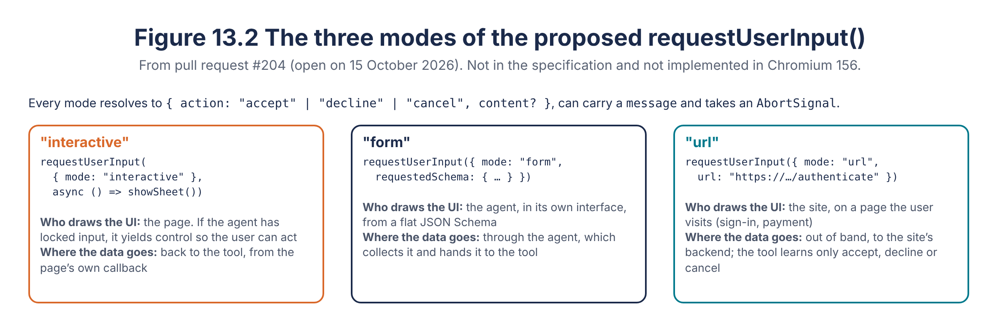

“A responsible agent should keep the human-in-the-loop and implement requests for confirmation as needed.”
— Chrome for Developers, “Agent security considerations for WebMCP”1
Who presses the button?
Chapter 12 looked at people who want to misuse a WebMCP page. This chapter looks at the person the page is supposed to serve. When an agent can search, compare, fill a cart and start a checkout, the interesting question is no longer can it place the order, but who decides that it should. The answer the explainer gives is clear in spirit. Its first goal is to “enable human-in-the-loop workflows” in which users delegate tasks “while maintaining visibility, history, and control”, and it lists fully autonomous agents with no browser UI as a non-goal.2 The specification itself is much quieter. It has no consent API, no confirmation API and, at the time of writing, an empty accessibility section.3
That gap is where this chapter lives. We'll look at how responsibility for consent is split between the agent, the browser and the page; build Trailhead's checkout so that it never completes without a person; follow the long and still unfinished design of an elicitation API; deal with signed-in sessions and sensitive data; ask what the page can know about the agent; and finish with accessibility, where WebKit's critique of WebMCP is at its sharpest.
As in Chapter 12, everything was checked against the WebMCP Draft Community Group Report dated 15 October 2026, Chrome's developer documentation and the webmachinelearning/webmcp issue tracker, all read on 15 October 2026. Browser behaviour was observed in Chromium 156.0.8078.4 with WebMCPTesting switched on. The sixteen tests behind every claim are in the chapter's folder in the demos repository.
Three parties, three kinds of consent
What each party can do
A consequential WebMCP call passes through three pieces of software, and each can ask the user something different.
The agent decides whether to call a tool at all. It is the only party that knows what the user actually asked for, so it is the only one that can ask “Do you want me to place this order?” before anything happens. Chrome's agent guidance tells agent builders to confirm actions with the user and to assume a tool mutates state unless its description or readOnlyHint says otherwise.1:1 The consequentialHint annotation exists to help with exactly this decision: it lets the agent or browser “selectively enforce mandatory user confirmation prompts before executing high-stakes tools”.4
The browser carries the call. It fires toolactivated at the page when a call begins and toolcancel when the caller cancels, and it hands the tool an AbortSignal.5 The specification doesn't ask it to show any consent UI of its own. A browser may do so, especially for its built-in agent, but nothing in the draft defines when or how.
The page runs the tool. It is the only party that can make the action itself wait for a person, because the action happens in its own code, and it is the only party whose interface the user already trusts for this site.

Nobody tells the page what the agent already asked
These layers don't talk to each other about consent. If the agent has already asked “Place the order for 7,297 kr?” and the user said yes, the page doesn't know, so it asks again. If the agent didn't ask, the page doesn't know that either. Issue #155 proposes that the browser tell the page what kind of consent, if any, it collected for a specific execution: explicit approval of these exact parameters, a remembered preference, or none.6 The proposal is open and has no implementation.
Until something like it exists, assume the worst and design for the user who sees your confirmation as the only one. A second confirmation costs one click. A missing one costs an order the user didn't want.
Building Trailhead's checkout
Trailhead's checkout tool has had one firm rule since it first appeared in this book: the page shows its own confirmation, and the order never completes without the user's click. Here is how to build that rule so that it actually holds.
The confirmation sheet
Listing 13.1 is the sheet the tool opens. It is framework-neutral DOM code, so it can sit behind the React components Chapter 10 builds or behind any other UI.
// The page's own confirmation step. The agent can open it; only a person should finish it.
const ARMING_DELAY_MS = 800; // ignore presses that land before a person could have read the sheet
export function confirmOrder(order, { signal } = {}) {
const sheet = document.querySelector('#confirm-sheet');
sheet.querySelector('[data-items]').replaceChildren(...order.lines.map((l) => {
const li = document.createElement('li');
li.textContent = `${l.quantity} × ${l.name}: ${formatNok(l.amount * l.quantity)}`;
return li;
}));
sheet.querySelector('[data-total]').textContent = formatNok(order.total);
sheet.querySelector('[data-ship-to]').textContent = order.shipTo;
sheet.querySelector('[data-pay-with]').textContent = order.payWith;
const place = sheet.querySelector('[data-place]');
const back = sheet.querySelector('[data-back]');
place.disabled = true;
sheet.showModal();
sheet.querySelector('h2').focus(); // screen readers start at the heading
const armed = setTimeout(() => { place.disabled = false; }, ARMING_DELAY_MS);
return new Promise((resolve, reject) => {
const finish = (outcome) => { cleanup(); sheet.close(); resolve(outcome); };
const onPlace = (e) => { if (e.isTrusted && !place.disabled) finish('confirmed'); };
const onBack = () => finish('declined');
const onCancel = (e) => { e.preventDefault(); finish('declined'); }; // Esc key
const onAbort = () => { cleanup(); sheet.close(); reject(signal.reason); };
place.addEventListener('click', onPlace);
back.addEventListener('click', onBack);
sheet.addEventListener('cancel', onCancel);
signal?.addEventListener('abort', onAbort, { once: true });
function cleanup() {
clearTimeout(armed);
place.removeEventListener('click', onPlace);
back.removeEventListener('click', onBack);
sheet.removeEventListener('cancel', onCancel);
signal?.removeEventListener('abort', onAbort);
}
});
}
export const formatNok = (amount) =>
new Intl.NumberFormat('nb-NO', { style: 'currency', currency: 'NOK' }).format(amount);
Each line answers a question a careful reviewer would ask.
- Does the user see exactly what will happen? The sheet lists every line, the total in Norwegian kroner formatted for the user's locale, where it will be shipped and how it will be paid. Chapter 12's “ambiguous finalization” scenario is a tool whose name and real effect differ;7 a confirmation that shows the real effect closes that gap for the user even when the agent misread it.
- Can a script finish it? No. The Place order handler ignores events whose
isTrustedisfalse, which the DOM Standard defines as events dispatched by the page's own script rather than by the user agent.8 In the tests,button.click()from page script left the sheet open and the order unplaced. - Can a click arrive before anyone could have read it? The button starts disabled and is enabled after 800 ms. A trusted mouse click that landed at the button's coordinates straight after the sheet opened did nothing. The delay is a judgement call; it should be long enough to stop a reflex, and short enough not to annoy.
- Can the user say no? Back to cart and the Esc key both resolve the promise with
'declined'. The dialog'scancelevent is intercepted so Esc becomes a decision rather than a silent close. - Can the agent change its mind? If the call's signal aborts, the sheet closes and the promise rejects with the abort reason, so nothing is left on screen waiting for a decision nobody needs any more.
The tools around it
Listing 13.2 registers get_cart and checkout. The interesting part is what each returns and what it waits for.
// Trailhead's cart and checkout tools. The page, not the agent, owns the final step.
import { confirmOrder } from './confirm-sheet.js';
export async function registerCheckoutTools({ cart, account, orders, signal }) {
const mc = document.modelContext;
await mc.registerTool({
name: 'get_cart',
title: 'View cart',
description: 'List the items in the cart with prices in NOK and the order total.',
inputSchema: { type: 'object', properties: {}, additionalProperties: false },
annotations: { readOnlyHint: true },
async execute() {
return {
lines: cart.lines().map(({ sku, name, quantity, amount }) =>
({ sku, name, quantity, price: { amount, currency: 'NOK' } })),
total: { amount: cart.total(), currency: 'NOK' },
shipTo: account.shippingSummary(), // "Oslo 0150", never the street address
payWith: account.paymentSummary() // "Visa ending 4242", never the number
};
}
}, { signal });
await mc.registerTool({
name: 'checkout',
title: 'Place your order',
description:
'Start checkout for the current cart. Trailhead shows the order and the user ' +
'places it on the page. Returns status "placed", or "cancelled_by_user" if the user ' +
'backs out. Never charges without the user.',
inputSchema: { type: 'object', properties: {}, additionalProperties: false },
annotations: { consequentialHint: true },
async execute(_input, { signal: call }) {
if (cart.lines().length === 0) {
return { status: 'error', code: 'CART_EMPTY',
message: 'The cart is empty. Add items with add_to_cart first.' };
}
// Stop waiting if the agent cancels OR the user signs out: unregistering a tool
// does not cancel calls that are already running.
const stop = AbortSignal.any([call, signal]);
let outcome;
try {
outcome = await confirmOrder({
lines: cart.lines(),
total: cart.total(),
shipTo: account.shippingSummary(),
payWith: account.paymentSummary()
}, { signal: stop });
} catch (err) {
if (call.aborted) throw err;
return { status: 'refused', code: 'SESSION_ENDED',
message: 'The user signed out, so nothing was ordered.' };
}
if (outcome !== 'confirmed') {
return { status: 'cancelled_by_user',
message: 'The user closed the order without placing it. Nothing was charged.' };
}
const order = await orders.place(cart.snapshot());
cart.clear();
return { status: 'placed', orderId: order.id, total: { amount: order.total, currency: 'NOK' } };
}
}, { signal });
}
checkout does not return until the person decides. Its execute awaits the sheet, which can take as long as the user needs, and Chapter 6 covered how a long-running call stays well-behaved by honouring its signal. When the person confirms, it places the order and returns { status: 'placed', orderId, total }. When they decline, it returns { status: 'cancelled_by_user', message }, Chapter 11's status for a person who said no in the page's own UI: a normal result that the agent can report, not an exception. An empty cart is status: 'error' with code CART_EMPTY, because the agent can fix it with another tool first. And its description tells the agent up front that the user places the order on the page, so a well-behaved agent will say “I've opened the order for you to confirm” instead of “Done”.
There is one subtle line. The tool combines two signals with AbortSignal.any(): the call's own signal, and the signal the tool was registered with. That second signal is aborted when the user signs out (Listing 13.4). The reason is a rule from the specification that Chapter 5 met: unregistering a tool does not cancel executions that are already running.9 Without the combined signal, a user who signs out while the sheet is open would leave a pending call waiting for a confirmation that now belongs to nobody. With it, the sheet closes and the call returns { status: 'refused', code: 'SESSION_ENDED', message }: a rule (no order without a signed-in user) says no, and only the user can change that by signing in again. If the abort came from the caller instead, the tool rethrows it so the caller sees its own cancellation.
The tests drive every ending through Chromium's real executeTool(): placed (order TH-100200, 7,297 NOK), declined through Back, declined through Esc, cancelled by the caller's AbortController (the caller gets AbortError and the sheet closes), ended by signing out, and an empty cart. In none of the non-placed cases did an order reach the order service.
Still in flux: what a long wait looks like to an agent. The specification lets
executetake as long as it likes and gives both sides anAbortSignal, but it says nothing about how an agent should present a tool that is waiting on the user, or how long it should wait before giving up. Agents will differ. Return a clear outcome either way, and don't assume the agent will keep the call open forever.
What a trusted click proves, and what it doesn't
The confirmation sheet rests on one assumption: that a trusted click means a person clicked. For an agent that only calls tools, that's true. An agent that can also operate the page, with real mouse and keyboard events, breaks it.
Issue #288 describes exactly that. Its author built a deploy console whose write tools only propose changes, which a human then approves on the page. They report that on 2 September 2026 an agent in a desktop app's built-in browser called a proposing tool and then, when nothing happened, clicked the page's own Approve button and carried on; the page recorded the action as approved by the user.10 The author is careful to call it one observed run on one host, and later posts describe reproductions and page-side mitigations, including holding the button for 700 ms instead of clicking it.10:1
A reply in the same thread explains why no page-side check can fully close the gap. HTML ties user activation to trusted input events, and WebDriver-style automation is designed to produce trusted events, so neither isTrusted nor user activation can tell a person from an automating agent.10:211 The issue's author agreed: isTrusted “isn't a boundary, it's a description of one host's current implementation”.10:3
Trailhead's own tests show the same thing from the other side. After the arming delay, the test presses Place order with Playwright, which drives Chromium through the DevTools protocol, and the page's listener records isTrusted: true. That is how the test suite places its order, and it is also how an agent with page-automation powers could place one.
So be precise about what Listing 13.1 buys you. It stops tool-only agents, page scripts and accidental instant clicks from completing an order. It does not stop an agent that has been given control of the page and decides to press the button. Against that, the boundary has to come from outside the page: the agent's own policy, or a browser-level mechanism that only a person can trigger. A later comment on #288 sketches such a mechanism, a short-lived “decision grant” the browser mints only from a person's input and binds to one specific proposal, and argues that a page should never infer authorization from a DOM event.10:4 Nothing like it is specified yet.
Still in flux: a human-only boundary. Whether browsers should offer a way for a page to require input that only a person can provide, and what it would look like, is open in issue #288 (opened 3 September 2026). Until then, page-side confirmation protects against mistakes and tool-only agents, not against an agent that automates the page itself.10:5
Elicitation: asking the user in the middle of a call
From requestUserInteraction() to nothing, for now
A confirmation sheet is one case of a more general need: a tool that, half-way through, needs something from the user. A size the agent didn't know, a choice between two delivery slots, a sign-in. The MCP world calls this elicitation. WebMCP has tried several designs for it, and has none at the moment.
The early design was requestUserInteraction(), a method on a ModelContextClient interface that represented the agent executing a tool. The tool gave it a callback that showed some page UI, and the point of the method, as one of the editors later explained, was to let the agent know that the page needed the user, so it could unlock input or tell the user the site needed attention.12 Issue #165, opened in April 2026, argued that this didn't cover agents driving the browser from outside, such as remote automation services, and the discussion moved towards MCP-style modes. Pull request #204 then replaced requestUserInteraction() with a new method, requestUserInput().13 On 11 June 2026 the Community Group resolved to specify the “interactive” mode first and keep discussing the others.12:1 The same day, pull request #205 removed the ModelContextClient interface from the specification altogether, on the grounds that the spec shouldn't carry interfaces whose algorithms were still empty.14 As of 15 October 2026, #165 and #204 are both open, and the specification has no elicitation method.
Chrome's tool-security page still says that “the spec draft includes requestUserInteraction() to asynchronously request user input at tool execution”, and links to a spec anchor that no longer exists.15 If you read that sentence and go looking, this section is why you won't find it.
The proposed shape
Listing 13.3 is the IDL from pull request #204, exactly as proposed. It is not in the specification and not in Chromium; it's here so you can recognise it, and so you can design today's code to fit it if it lands.
requestUserInput() as proposed in pull request #204 (proposal; not in the spec, not implemented)[Exposed=Window, SecureContext]
interface ModelContextClient {
Promise<ModelContextUserInputResult> requestUserInput(
ModelContextUserInputOptions options,
optional ModelContextInteractiveCallback callback);
};
callback ModelContextInteractiveCallback = Promise<any> ();
enum ModelContextUserInputMode { "interactive", "form", "url" };
enum ModelContextUserInputAction { "accept", "decline", "cancel" };
dictionary ModelContextUserInputOptions {
required ModelContextUserInputMode mode;
USVString message;
object requestedSchema;
USVString url;
AbortSignal signal;
};
dictionary ModelContextUserInputResult {
required ModelContextUserInputAction action;
object content;
};

The three modes answer that question differently.13:1 In interactive mode the page draws the UI in a callback, and if the agent currently has exclusive control of the page, for example with keyboard and mouse locked, it yields so the user can act. In form mode the page sends a JSON Schema, restricted to flat objects with primitive properties, and the agent draws a form in its own interface and returns what the user typed. In url mode the agent shows the user a URL to visit; the proposal reserves it for sensitive flows such as authentication and payment, “where user-provided data must not flow through the agent”, and the site picks up the result through its own backend. Every mode resolves to { action, content }, where action is accept, decline or cancel.
What to build until it lands
You can build all three modes by hand today, and doing so keeps your code ready for whichever version ships.
- Interactive is what Listing 13.1 already does: the tool shows the page's own UI and awaits it. If
requestUserInput()arrives, the change is to callconfirmOrder()from inside its callback, so the agent knows to step aside. - Form has no good equivalent today, because the page can't ask the agent to draw anything. Return a structured result that names what's missing, Chapter 11's
{ status: 'needs_input', code: 'MISSING_INFORMATION', missing: ['size'], message }, and let the agent ask the user in its own words, then call again. - URL is the right model for payment and sign-in now. Don't let card numbers, one-time codes or passwords become tool parameters. Return the same
needs_inputshape with the page to visit,{ status: 'needs_input', code: 'MISSING_INFORMATION', missing: ['payment'], message, url: 'https://shop.trailhead.example/pay/…' }, and let the user complete the step on your page, where your existing payment and authentication flows apply. Issue #316 asks the editors for exactly this kind of guidance on sensitive fields.16
Notice that Listing 13.3's result actions, accept, decline and cancel, map directly onto outcomes Trailhead's checkout already has: placed, cancelled_by_user, and a call cancelled through its signal. If the platform settles on this design, translating between the two is one line of code.
Still in flux: elicitation. There is no elicitation API in the 15 October 2026 draft.
requestUserInteraction()was removed withModelContextClienton 11 June 2026 (pull request #205); its proposed replacementrequestUserInput()(pull request #204) and the wider discussion (issue #165) are open. Chrome's tool-security page still refers to the old method.12:213:214:115:1
Signed-in sessions and sensitive data
The agent arrives with your user's cookies
The specification's first baseline assumption about agents is identity inheritance: an agent visiting a site carries the user's logged-in credentials and session state.17 For a store like Trailhead, that means a tool call runs with exactly the same authority as the user's own clicks. The spec's discussion of misrepresented intent spells out the consequence: tools can make purchases, change settings or share data “without additional verification”.18
Two design rules follow. First, tools that act on an account should exist only while someone is signed in. Second, those tools should return the least the agent needs, because whatever they return may be carried to the next site the agent visits.
Tools that follow the session
Listing 13.4 ties Trailhead's account tools to the session.
// Tools exist only while someone is signed in, and vanish the moment they sign out.
import { registerCheckoutTools } from './checkout-tools.js';
export function bindToolsToSession({ session, cart, account, orders }) {
if (!('modelContext' in document)) return;
let tools = null;
async function onChange() {
tools?.abort(); // signed out, or a different user: drop everything
tools = null;
if (!session.user) return;
tools = new AbortController();
try {
await registerCheckoutTools({ cart, account, orders, signal: tools.signal });
} catch (err) {
if (err.name !== 'AbortError') throw err; // the session changed mid-registration
}
}
session.addEventListener('change', onChange);
onChange();
}
On every session change the module aborts the current registration and, if someone is signed in, registers fresh tools under a new controller. A signed-out visitor never sees get_cart or checkout. When the user signs out, the tools vanish, and because checkout combines this registration signal with its call signal, any pending checkout ends too. The same pattern handles switching accounts without leaving the previous user's tools behind. The try block absorbs the AbortError that registerTool() throws if the session changes while registration is still in progress.19
The tests confirmed each step in Chromium: no tools before sign-in, exactly two afterwards with readOnlyHint and consequentialHint intact, none after sign-out, and a pending checkout that returned status: 'refused' with code SESSION_ENDED when the user signed out mid-confirmation.
Summaries, not secrets
Look again at get_cart in Listing 13.2. It returns the lines, the prices and the total, but for the address it returns shipTo: 'Oslo 0150' and for payment payWith: 'Visa ending 4242'. The agent needs enough to tell the user what will happen, “shipping to Oslo, paying with your Visa ending 4242”, and nothing more. The street address and the card number stay on Trailhead's servers. The test checks that the result has exactly four keys and that the summaries are what the agent gets.
This is the output-side twin of Chapter 12's over-parameterisation rule. The spec warns that agents correlate context across sites;17:1 anything a tool returns can become context for the next site. Issue #331 and the older proposal #110 discuss a sensitiveHint annotation that would let a page mark a tool's output as sensitive, so an agent could ask before reading it and keep it out of logs and long-term memory.20 Until it exists, the only reliable control is not returning the sensitive data in the first place.
Two further boundaries are worth naming. Cross-origin exposure from Chapter 12 applies with extra force to account tools: a vendor frame should never exposedTo an embedder any tool that reads or acts on the user's account unless you would hand that embedder the same data directly, which is Chrome's test too.15:2 And private browsing is the browser's responsibility, but the spec reminds implementers that exposing tools to agents there can leak across the boundary users expect.21 Never treat a tool call as proof that the user is in their usual profile.
Agent identity, allowlists and user activation
The page doesn't know which agent is calling
execute receives the input and a signal. It doesn't receive the name of the agent, its vendor or any proof of either. Several proposals want to change that. Issue #105 proposes an agent identity verification and authorization framework, arguing that sites without a backend have no other way to tell a trusted agent from a scraper.22 Issue #54, opened at TPAC in November 2025, challenges the assumption that agents should act with the user's identity at all, and suggests they authenticate as OAuth clients, as MCP itself does.23 Issue #116 collects use cases for allowlists, such as an enterprise that wants its tools callable by its own extension but not by the browser's built-in agent.24 All three are open.
WebKit's position explains why this is contentious. It argues that an agent acting for a user is “in effect, assistive technology” and that the site “should not single it out for different treatment”. Making “an agent is driving” observable, it says, invites sites to give agents capabilities they withhold from humans, or to block agents the way some sites once blocked screen readers.25 Agent identity would make that easier, not harder.
For now, design as if you can't tell agents apart, because you can't. Authorise on the user's session, exactly as you would a click, and keep consequential steps behind the page's own confirmation.
A tool call is not a user gesture
Many web APIs require transient user activation: a recent click or key press, as defined by HTML's activation model.11:1 Opening a pop-up and entering full screen are familiar examples. Issue #62 asks whether a WebMCP tool call should grant activation, since the agent is acting for the user. The discussion is open; one participant prefers a separate “agent activation” concept that could unlock specific powerful features without pretending to be a user.26
Chromium 156 grants nothing. The demo registers a probe tool and calls it from a timer in a page nobody has touched. Inside execute, navigator.userActivation.isActive and hasBeenActive were both false. (Testing this needs care: Playwright's own evaluate() and waitForFunction() count as user gestures, so the probe runs entirely from page script and the test only reads the result afterwards.) The practical rule: don't put anything that needs activation inside execute. If a step needs it, render a button and let the user press it, which is what Trailhead's sheet does anyway.
Still in flux: identity and activation. Agent identity (#105, #54), agent allowlists (#116), consent signals from browser to page (#155) and user activation for tool calls (#62) were all open on 15 October 2026. None is in the specification or, as far as these tests could observe, in Chromium 156.22:123:124:16:126:1
Accessibility: agents as assistive technology
Two readings of the same idea
The specification's introduction says tools can be invoked by agents, browser agents “and assistive technologies”.27 The explainer lists “Improve accessibility through agents” as a goal, while saying that WebMCP “is not designed for ingestion by accessibility technology, nor is it designed to interact directly with a page's accessibility tree”; agents act as “highly capable intermediaries”.2:1 Many of the problems agents have with human-first interfaces, the explainer adds, are the same problems assistive technology has always had.2:2
WebKit reads the same facts the other way. Its position argues that when an agent struggles with a site, that is “a gap in the page's own semantics”, and the fix belongs in HTML and ARIA, “where the user, assistive technology, and agents all benefit”. It quotes the explainer's own sentence about not serving accessibility technology as evidence that “richer, actionable semantics reach agents while screen-reader and keyboard users get less”, and notes that tool and parameter descriptions carry no language or direction metadata.25:1 Meanwhile, the specification's §7 “Accessibility considerations” is a heading with nothing under it.3:1 Issue #277 asks for accessibility requirements for any browser or agent UI built from WebMCP data, following an accessibility review in issue #65 and a self-review checklist in #272.28
You don't have to settle that debate to act on it. Both sides agree on the outcome they want: a person using a keyboard or a screen reader must not get a worse site because agents get a better one.
Parity, presence and focus
Three practices make Trailhead's agent features accessible in their own right.
Parity. Every tool Trailhead registers maps to something a person can do in the UI: view the cart, check out. There is no tool-only discount and no tool-only shortcut. The reverse holds too: the confirmation is a normal, keyboard-operable dialog that a screen-reader user reaches the same way as anyone else. Chapter 11's rule that agent-facing text should stay in step with the UI is also an accessibility rule.
Presence. When an agent acts on a page, everybody using that page should know, including people who can't see a cursor move. Listing 13.5 listens for the specification's tool events and announces them through a live region.
// Tell everyone, including screen-reader users, when an agent is acting on this page.
export function showAgentPresence() {
if (!('modelContext' in document)) return;
const banner = document.querySelector('#agent-presence'); // role="status" in the HTML
const titles = new Map();
async function refreshTitles() {
for (const t of await document.modelContext.getTools()) titles.set(t.name, t.title ?? t.name);
}
document.modelContext.addEventListener('toolchange', refreshTitles);
refreshTitles();
document.modelContext.addEventListener('toolactivated', (e) => {
banner.textContent = `An assistant is using Trailhead: ${titles.get(e.toolName) ?? e.toolName}.`;
banner.hidden = false;
});
document.modelContext.addEventListener('toolcancel', (e) => {
banner.textContent = `The assistant stopped: ${titles.get(e.toolName) ?? e.toolName}.`;
});
}
The banner is a <p role="status" aria-live="polite"> in the page's HTML, so screen readers announce changes without stealing focus. It uses each tool's title, which the specification says is for user-facing UI and should be localised to the user's language, so the announcement reads “An assistant is using Trailhead: Place your order.” rather than “checkout”.29 toolactivated is fired at the ModelContext of the document whose tool is running, so the page hears about calls from any agent, not only from its own scripts.5:1 In the Chromium tests the banner showed the activation text when checkout began and “The assistant stopped: Place your order.” when the caller cancelled.
Focus. When the confirmation sheet opens, Listing 13.1 moves focus to its heading, so a screen-reader user hears “Place this order?” immediately and can read the order in sequence. The test asserts that document.activeElement is the heading. Esc declines, Back to cart declines, and nothing depends on a pointer.
Still in flux: accessibility requirements. The specification's §7 is empty in the 15 October 2026 draft. Requirements for agent and browser UI built from WebMCP data (#277), the accessibility review (#65) and the self-review checklist (#272) are open, and WebKit's opposition cites accessibility among its main concerns.3:228:125:2
Summary
- The explainer promises human-in-the-loop workflows; the specification has no consent API, no confirmation API and an empty accessibility section. Consent is shared between the agent (which can ask before calling), the browser (which carries the call and fires events) and the page (which can make the action wait for a person). None of them currently tells the others what it asked.
- Trailhead's
checkoutopens the page's own confirmation sheet, shows the exact order with summarised address and payment, enables Place order only after a short delay and accepts only trusted clicks. It returnsplacedor Chapter 11'scancelled_by_useras values, refuses withSESSION_ENDEDif the user signs out mid-checkout, and honours both the caller's signal and the session's. - A trusted click is not proof of a person. An agent that can automate the page produces trusted events, as issue #288 reports and as this chapter's own Playwright tests show. Page-side confirmation stops mistakes and tool-only agents; a human-only boundary would need the browser, and none is specified.
- Elicitation is unresolved.
requestUserInteraction()was removed withModelContextClientin June 2026; its proposed replacement,requestUserInput()with interactive, form and url modes, is still an open pull request. Build the equivalents by hand, and keep passwords, codes and card numbers out of tool parameters. - Tools that act on an account should exist only while someone is signed in, should vanish on sign-out (ending any pending call) and should return summaries rather than secrets.
- The page cannot identify the calling agent, and a tool call does not grant user activation in Chromium 156. Authorise on the user's session and put activation-gated steps behind real buttons.
- Accessibility is contested ground. Keep agent features in parity with the UI, announce agent activity in a live region using localised tool titles, and make every confirmation keyboard- and screen-reader-friendly.
Chapter 14 turns to the question every chapter so far has raised: how do you know your tools behave like this when the caller is probabilistic? It covers DevTools, protocol-level tests and evaluation suites, and the Trailhead tests from this chapter are a starting point.
Notes
Notes
Chrome for Developers, “Agent security considerations for WebMCP” (published 9 June 2026), section “Confirm actions with the user”. https://developer.chrome.com/docs/agents/security ↩︎ ↩︎
WebMCP explainer (README), “Goals & Non-Goals” (including “Enable human-in-the-loop workflows”, “Improve accessibility through agents” and the non-goal “Fully autonomous workflows”) and the background section on assistive technology. https://github.com/webmachinelearning/webmcp ↩︎ ↩︎ ↩︎
WebMCP specification, Draft Community Group Report, 15 October 2026, §7 Accessibility considerations (no content in this draft). https://webmachinelearning.github.io/webmcp/#accessibility ↩︎ ↩︎ ↩︎
WebMCP specification, §6.4.5 Consequential Annotation for Tool Executions. https://webmachinelearning.github.io/webmcp/#mitigation-consequential-annotation ↩︎
WebMCP specification, §4.3 Events (
toolchange,toolactivated,toolcancel) and the tool execute steps in §3 (“Fire an event named toolactivated at targetDocument's associated ModelContext”). https://webmachinelearning.github.io/webmcp/#supporting-concepts ↩︎ ↩︎webmachinelearning/webmcp issue #155, “
userConsentcommunication from User Agent to Web Application” (opened 26 March 2026; open). https://github.com/webmachinelearning/webmcp/issues/155 ↩︎ ↩︎WebMCP specification, §6.3.2.3 Scenario: Ambiguous Finalization (Accidental or Malicious). https://webmachinelearning.github.io/webmcp/#scenario-ambiguous-finalization ↩︎
WHATWG DOM Standard, the
isTrustedattribute ofEvent. https://dom.spec.whatwg.org/#dom-event-istrusted ↩︎WebMCP specification, §3, “unregister a tool”, and the note on in-flight executions. https://webmachinelearning.github.io/webmcp/#supporting-concepts ↩︎
webmachinelearning/webmcp issue #288, “A user agent that both invokes tools and automates the page can complete the page's own human-approval step” (opened 3 September 2026; open), including the author's reports and follow-ups of 3 September 2026 and the comments by @mlmrx (3 September 2026) and @Hronom (21 September 2026). https://github.com/webmachinelearning/webmcp/issues/288 ↩︎ ↩︎ ↩︎ ↩︎ ↩︎ ↩︎
WHATWG HTML Standard, §6.4 Tracking user activation (activation-triggering input events, transient and sticky activation). https://html.spec.whatwg.org/multipage/interaction.html#tracking-user-activation ↩︎ ↩︎
webmachinelearning/webmcp issue #165, “WebMCP elicitation via requestUserInteraction() (was: Human in the Loop support for non-browser clients)” (opened 16 April 2026; open), including the Community Group resolution of 11 June 2026 recorded in the thread. https://github.com/webmachinelearning/webmcp/issues/165 ↩︎ ↩︎ ↩︎
webmachinelearning/webmcp pull request #204, “Replace requestUserInteraction with requestUserInput” (opened 9 June 2026; open), the proposed IDL and member definitions. https://github.com/webmachinelearning/webmcp/pull/204 ↩︎ ↩︎ ↩︎
webmachinelearning/webmcp pull request #205, “Remove
ModelContextClientfor now” (merged 11 June 2026), and the discussion on pull request #204 of 10 June 2026. https://github.com/webmachinelearning/webmcp/pull/205 ↩︎ ↩︎Chrome for Developers, “WebMCP tool security” (published 9 June 2026, updated 1 September 2026), sections “Expose your tools carefully” and “Next steps”. https://developer.chrome.com/docs/ai/webmcp/secure-tools ↩︎ ↩︎ ↩︎
webmachinelearning/webmcp issue #316, “Guidance for sensitive form fields (credentials, card data, national IDs) in declarative and imperative tools” (opened 23 September 2026; open). https://github.com/webmachinelearning/webmcp/issues/316 ↩︎
WebMCP specification, §6.2 Agent Baseline Capabilities (identity inheritance, extended user context, cross-site context). https://webmachinelearning.github.io/webmcp/#agent-baseline-capabilities ↩︎ ↩︎
WebMCP specification, §6.3.2.1 Why This Matters. https://webmachinelearning.github.io/webmcp/#why-intent-matters ↩︎
webmachinelearning/webmcp pull request #202, “Reject registerTool() promise when signal is aborted” (merged 17 June 2026). https://github.com/webmachinelearning/webmcp/pull/202 ↩︎
webmachinelearning/webmcp issue #331, “Scope of
consequentialHintfor high-risk read tools” (opened 30 September 2026; open), and issue #110, “Proposal:sensitiveHintannotation for tool outputs and a standardized secret reference content type” (opened 25 February 2026; open). https://github.com/webmachinelearning/webmcp/issues/331 ↩︎WebMCP specification, §6.3.5 Interaction with Private Browsing Modes. https://webmachinelearning.github.io/webmcp/#interaction-with-private-browsing ↩︎
webmachinelearning/webmcp issue #105, “Proposal: Agent Identity Verification and Authorization Framework” (opened 23 February 2026; open). https://github.com/webmachinelearning/webmcp/issues/105 ↩︎ ↩︎
webmachinelearning/webmcp issue #54, “Challenging assumptions of Identity within WebMCP” (opened 11 November 2025; open). https://github.com/webmachinelearning/webmcp/issues/54 ↩︎ ↩︎
webmachinelearning/webmcp issue #116, “Agent allowlist use cases and requirements” (opened 27 February 2026; open). https://github.com/webmachinelearning/webmcp/issues/116 ↩︎ ↩︎
WebKit/standards-positions issue #670, “WebMCP” (position: oppose), position comment by @mwyrzykowski, 3 June 2026. https://github.com/WebKit/standards-positions/issues/670 ↩︎ ↩︎ ↩︎
webmachinelearning/webmcp issue #62, “Grant user gesture activation when interacting with the webpage” (opened 8 January 2026; open), including comments of 15 January, 11 March and 19 March 2026. https://github.com/webmachinelearning/webmcp/issues/62 ↩︎ ↩︎
WebMCP specification, §1 Introduction. https://webmachinelearning.github.io/webmcp/ ↩︎
webmachinelearning/webmcp issue #277, “Define accessibility requirements for WebMCP user-agent UI” (opened 1 September 2026; open); issue #65, “WebMCP accessibility considerations” (opened 26 January 2026; open); and issue #272, “WebMCP accessibility review checklist” (opened 31 August 2026; open). https://github.com/webmachinelearning/webmcp/issues/277 ↩︎ ↩︎
WebMCP specification, §4.2.1 ModelContextTool Dictionary, the
titlemember (“used by the user agent to reference the tool in the user interface … recommended that this string be localized to the user's language”). https://webmachinelearning.github.io/webmcp/#model-context-tool ↩︎